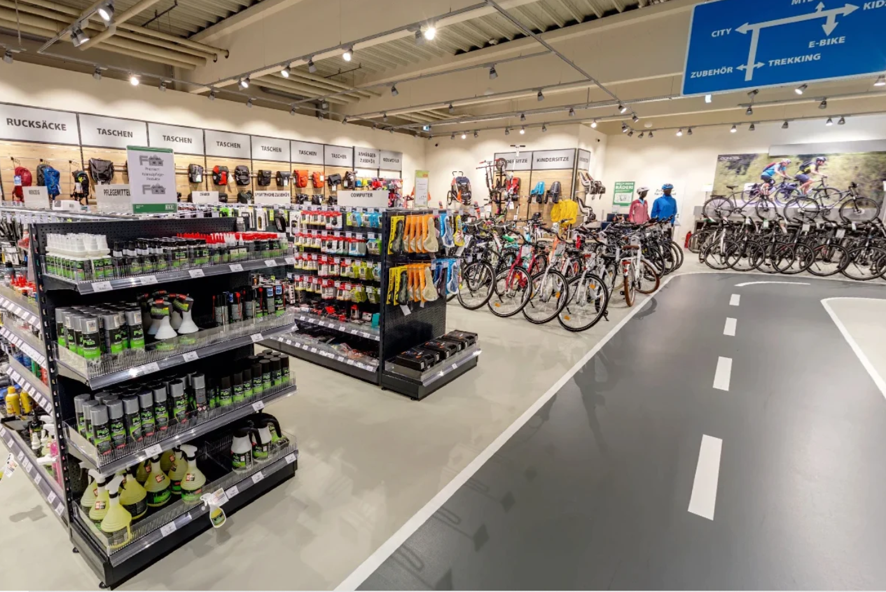
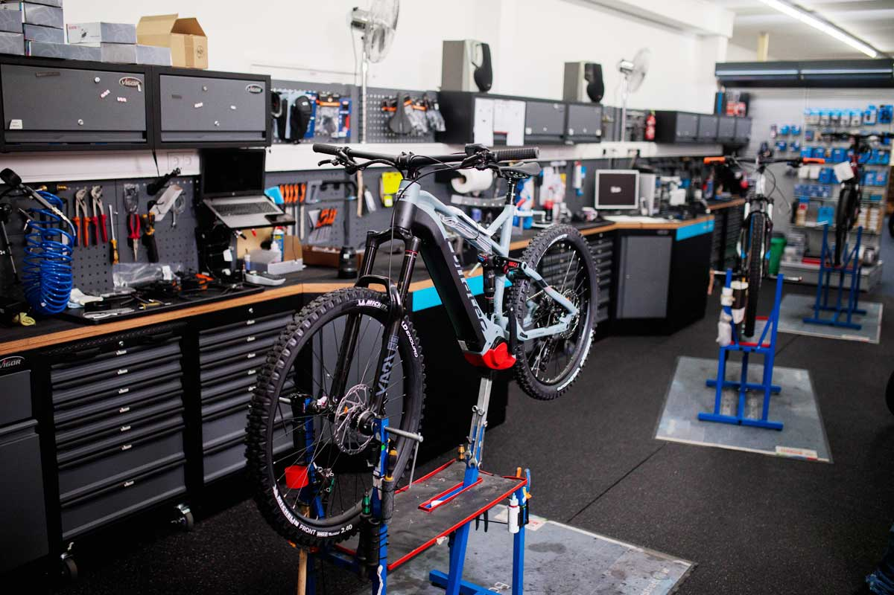

Alles rund ums Rad gibts bei uns, denn wir sind Ihr Radgeber!
Nach über 40 Jahren Erfahung sind wir auch diese Saisson wieder für Sie da. Unser Familienbetrieb liegt in Mitten der schönen Landeshauptstadt Mainz und bietet alles was für einen Ausflug mit dem Rad benötigt wird.
Selbstverständlich fährt es sich auch außerhalb der Pfalz wunderbar mit dem Fahrrad, dem E-Bike oder dem Lastenrad. Daher können wir Ihnen unseren Online-Shop sehr ans Herz legen. Ob es sich nun um eine komplette Neuanschaffung oder
den Wechsel kaputter Teile handelt, sind wir Ihr Ansprechpartner und gerne bereit Ihnen weiterzuhelfen.

Shop
Unser Sortiment umfasst neben verschiedensten Varianten an Fahrrädern, auch E-Bikes, Bio-Bikes und eine Vielzahl an Zubehör.
Sind Sie auf der Suche nach Fahrradschlössern, Helmen oder Sportbekleidung, dann sind Sie bei uns an der richtigen Adresse. Auf Grund unseres sich stets anpassenden Sortiments, sind wir immer auf dem neusten Stand, sodass dem Radfahrer bei uns keine Wünsche offen bleiben.
Servicewerkstatt
Sollte ein Problem oder einen Schaden an ihren Fahrrad vorliegen, so melden Sie sich gerne bei unserer Werkstatt.
Reperaturen und Inspektionen führen wir nach telefonischer oder persönlicher Absprache und Vereinbarung eines Termins gerne aus. Erreichen können Sie unsere Servicewekstatt von Montag bis Freitag von 10:00 - 19.00 Uhr und Samstags von 10:00 - 16:00 Uhr folgender Maßen:
Telefonisch: (06131) 123456-78
E-Mail: radgeber@mainz.de
